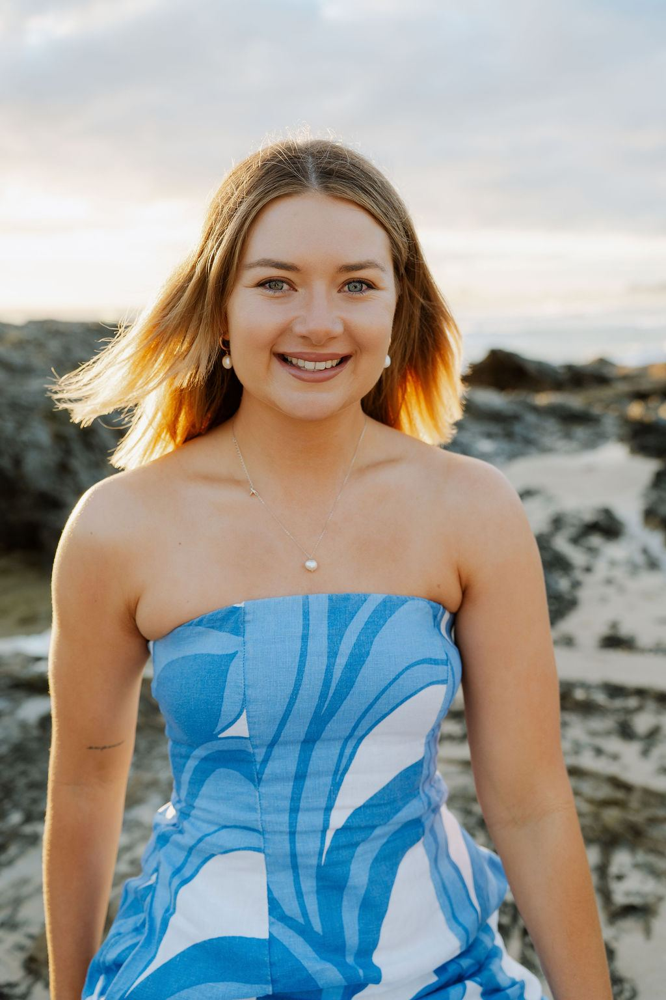
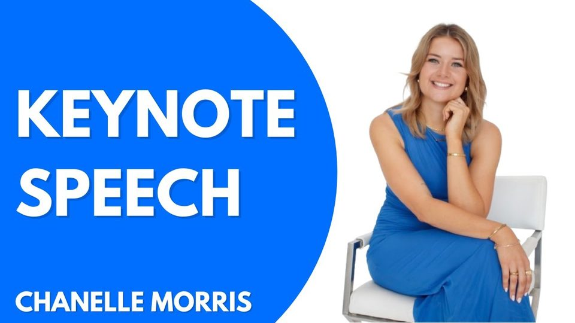
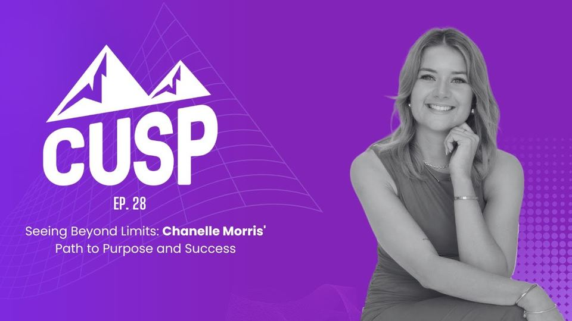
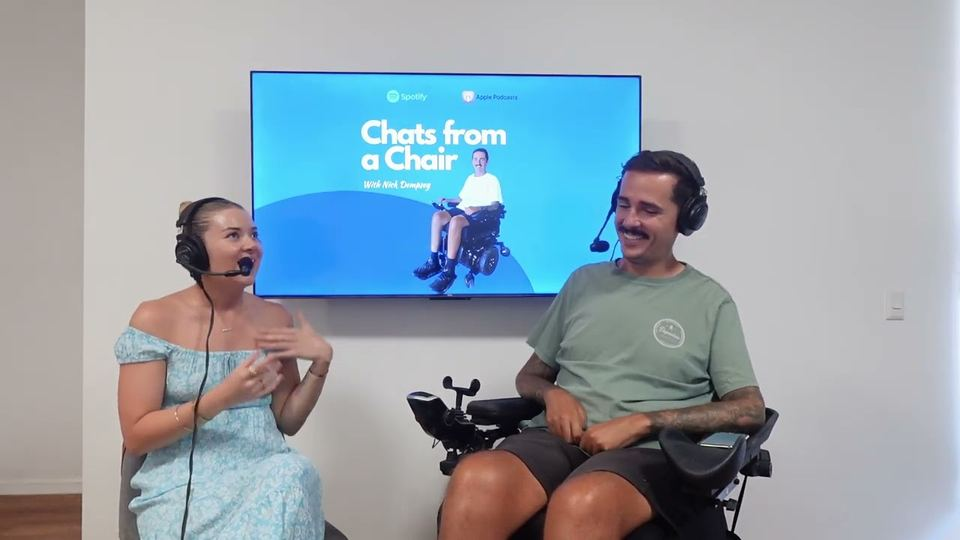

What I do · 01
Motivational speaking
Talks on confidence, resilience and mindset, built on my own journey with low vision. Real stories and practical tools that help your audience replace fear with belief and step into their full potential.
The talk
“Our limits are rarely as fixed as we think they are.”
I spent years believing I wasn’t capable, good enough or ‘normal’ enough to do the things I dreamed of. My condition has always remained the same, but my mindset changed, and so did my life.
In my talks I share that journey honestly, from being housebound at rock bottom to a solo snow season in New Zealand, a university degree and my first half marathon. Along the way I share the practical tools I used to challenge my negative beliefs, so your audience leaves inspired and ready to challenge their own.
I speak to schools and youth leadership programs, community groups, disability and care organisations, and workplaces, and I shape every talk around your audience and your event.

Speaking topics
-
Resilience and mindset
How changing the way I thought about my disability changed my life, and how your audience can challenge the beliefs that hold them back.
-
Confidence building
Practical ways to swap ‘I can’t’ for ‘watch me’, from someone who once found the world too overwhelming to go anywhere alone.
-
Living with disability
An honest look at life with low vision, and what it takes to go from hiding a disability to owning it.
-
Inclusion and belonging
What it takes to help people feel safe, seen and included, at school, at work and in the community.
-
Starting a business with disability
What I’ve learnt building a speaking business and a community from the ground up.
Watch and listen
-

Speech · 9 min · My favourite Keynote speech Motivation and overcoming negative beliefs Watch on YouTube -

Podcast · 25 min The CUSP Podcast · #28 Seeing beyond limits: Chanelle’s path to purpose and success Watch on YouTube -

Podcast · 44 min Chats From A Chair Day-to-day life, dating and a change in mindset Watch on YouTube
More of what I do
Ready to inspire your audience?
Enquire for speaker rates, or book a call to talk through your event.